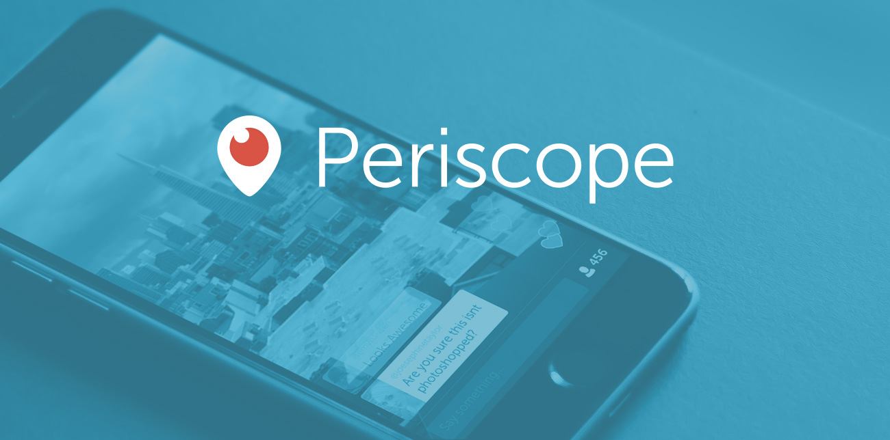

← Go LIVE · Meerkat
About Periscope

CAPTURE [wa] · 20150326 og · not a live stream
- 2015 · Twitter-owned livestream class
- Go LIVE from phone · title culture · hearts/comments lore (text only)
- Competes with Meerkat · later FB Live in the feed
- Empty title blocked · no real stream · educational theater
Go LIVE REAL →